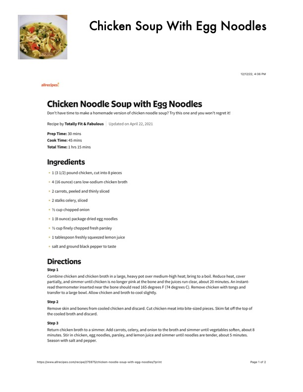

Chicken Soup With Egg Noodles

Original cookbook page 398
Ingredients
- 1(31/2) pound chicken, cut into 8 pieces
- 4 (16 ounce) cans low-sodium chicken broth
- 2 carrots, peeled and thinly sliced
- 2 stalks celery, sliced
- Ya cup chopped onion
- 1 (8 ounce) package dried egg noodles
- Y2 cup finely chopped fresh parsley
- 1 tablespoon freshly squeezed lemon juice
- salt and ground black pepper to taste
Instructions
- Prep Time: 30 mins Cook Time: 45 mins Total Time: 1 hrs 15 mins
- 1(31/2) pound chicken, cut into 8 pieces
- 2 carrots, peeled and thinly sliced
- Y2 cup finely chopped fresh parsley
- Combine chicken and chicken broth in a large, heavy pot over medium-high heat; bring to a boil.
- Reduce heat, cover partially, and simmer until chicken is no longer pink at the bone and the juices run clear, about 20 minutes.
- Remove chicken with tongs and transfer to a large bowl.
- Allow chicken and broth to cool slightly.
- Remove skin and bones from cooled chicken and discard.
- Cut chicken meat into bite-sized pieces.
- Skim fat off the top of the cooled broth and discard.
- Return chicken broth to a simmer.
- Add carrots, celery, and onion to the broth and simmer until vegetables soften, about 8 minutes.
- Stir in chicken, egg noodles, parsley, and lemon juice and simmer until noodles are tender, about 5 minutes.
- Season with salt and pepper.
Recipe #398 from collection